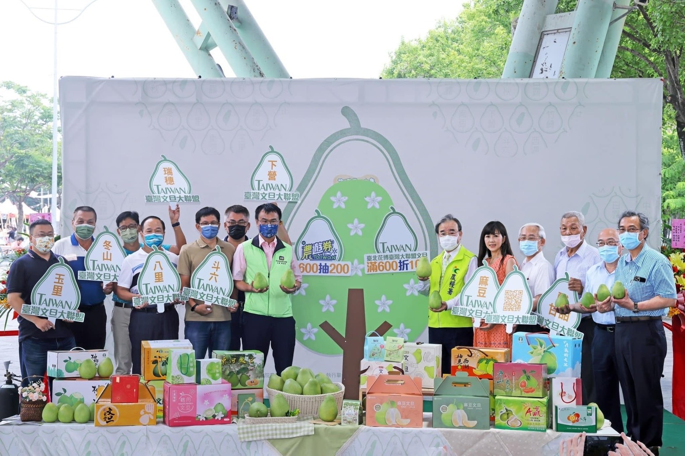

辦理文旦上市記者會及展售活動（圖／農糧署）

媒合優質國產文旦外銷中國大陸以外市場，包含日本、加拿大、香港、馬紹爾等國家，目標200公噸，實際達成110公噸。
透過生產控管（建置地磅站、取得國際品質驗證、辦理教育講習及觀摩會）、內銷通路（辦理文旦上市記者會及完成文旦禮盒設計）及休閒文化（辦理路跑及健走活動、文旦採果樂及產業活動），教育消費者有關文旦產地、文旦選購及文旦食用方法，鼓勵消費者節前及節後採購文旦，有效帶動國內市場銷售量，目標1,000公噸，實際達成1,000公噸。
收購文旦次級品，應用改良場研發之文旦果皮精油萃取技術取得果皮、果肉及精油等，製作洗髮乳、洗手慕斯等清潔用品，或製成柚皮糖、沾醬等食品，目標1,000公噸，實際達成700公噸。
1.截至111年底文旦產銷履歷面積692.41公頃，較110年底增加31.68公頃。
2.路跑及健走活動5場。
3.文旦採果樂及產業活動8場。
4.文旦上市記者會3場。
5.教育訓練及觀摩會18場。
6.建置坑式地磅站1處。
7.ISO22000國際品質驗證1式。
8.文旦柚皮精油萃取技術1式。
9.包裝設計1式。